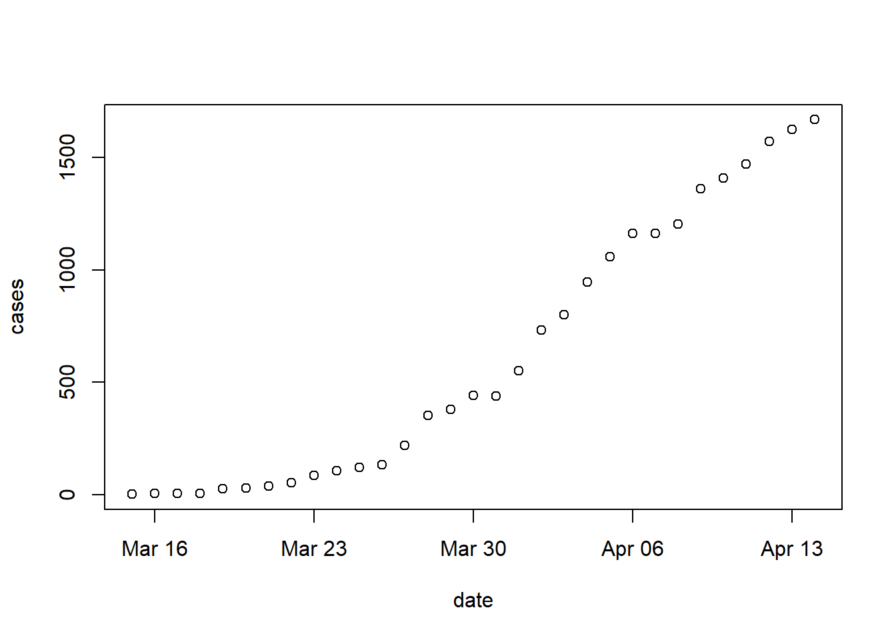
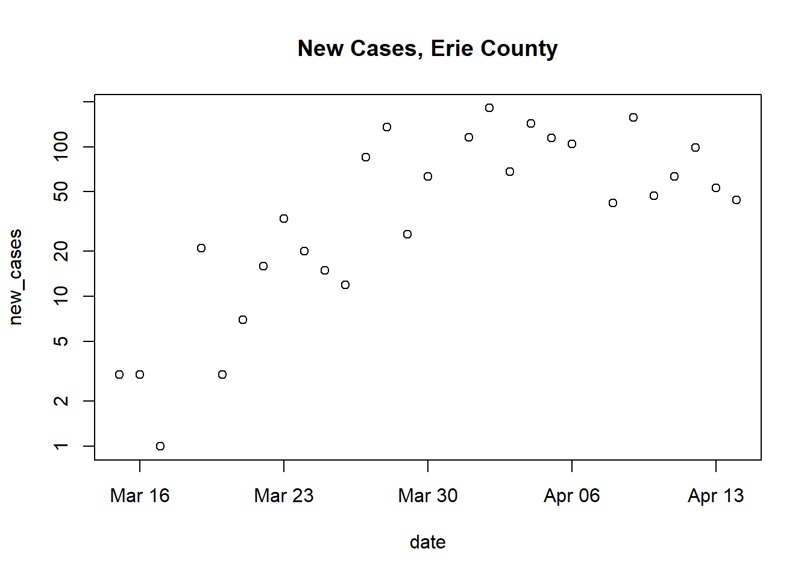

Week 2 The data frame
2.1 Day 8 (Monday) Zoom check-in
2.2 Day 9: Creation and manipulation
Creation
Last week we created vectors summarizing our quarantine activities
activity <- c("check e-mail", "breakfast", "conference call", "webinar", "walk")
minutes <- c(20, 30, 60, 60, 60)
is_work <- c(TRUE, FALSE, TRUE, TRUE, FALSE)
levels <- c("connect", "exercise", "consult", "hobby", "essential")
classification <- factor(
c("connect", "essential", "connect", "consult", "exercise"),
levels = levels
)
dates <- rep("04-14-2020", length(activity))
date <- as.Date(dates, format = "%m-%d-%Y")Each of these vectors is the same length, and are related to one another in a specific way – the first element of activity, ‘check e-mail’, is related to the first element of minutes, ‘20’, and to is_work, etc.
Use data.frame() to construct an object containing each of these vectors
Each argument to
data.frame()is a vector representing a columnThe
stringsAsFactors = FALSEargument says that character vectors should NOT be automatically coerced to factorsactivities <- data.frame( activity, minutes, is_work, classification, date, stringsAsFactors = FALSE ) activities ## activity minutes is_work classification date ## 1 check e-mail 20 TRUE connect 2020-04-14 ## 2 breakfast 30 FALSE essential 2020-04-14 ## 3 conference call 60 TRUE connect 2020-04-14 ## 4 webinar 60 TRUE consult 2020-04-14 ## 5 walk 60 FALSE exercise 2020-04-14We can query the object we’ve created for its
class(),dim()ensions, take a look at thehead()ortail()of the object, etc.names()returns the column names.class(activities) ## [1] "data.frame" dim(activities) # number of rows and columns ## [1] 5 5 head(activities, 3) # first three rows ## activity minutes is_work classification date ## 1 check e-mail 20 TRUE connect 2020-04-14 ## 2 breakfast 30 FALSE essential 2020-04-14 ## 3 conference call 60 TRUE connect 2020-04-14 names(activities) ## [1] "activity" "minutes" "is_work" "classification" ## [5] "date"
Column selection
Use [ to select rows and columns
activitiesis a two-dimensional objectSubset the data to contain the first and third rows and the first and fourth columns
Subset columns by name
Subset only by row or only by column by omiting the subscript index for that dimension
activities[c(1, 3), ] # all columns for rows 1 and 3 ## activity minutes is_work classification date ## 1 check e-mail 20 TRUE connect 2020-04-14 ## 3 conference call 60 TRUE connect 2020-04-14 activities[, c("activity", "minutes")] # all rows for columns 1 and 2 ## activity minutes ## 1 check e-mail 20 ## 2 breakfast 30 ## 3 conference call 60 ## 4 webinar 60 ## 5 walk 60Be careful when selecting a single column!
By default, R returns a vector
Use
drop = FALSEto return adata.frame
Use $ or [[ to select a column
Selection of individual columns as vectors is easy
An alternative, often used in scripts, is to use
[[, which requires the name of a variable provided as a character vector
Column selection and subsetting are often combined, e.g., to create a data.frame of work-related activities, or work-related activities lasting 60 minutes or longer
work_related_activities <- activities[ activities$is_work == TRUE, ]
work_related_activities
## activity minutes is_work classification date
## 1 check e-mail 20 TRUE connect 2020-04-14
## 3 conference call 60 TRUE connect 2020-04-14
## 4 webinar 60 TRUE consult 2020-04-14
row_idx <- activities$is_work & (activities$minutes >= 60)
activities[row_idx,]
## activity minutes is_work classification date
## 3 conference call 60 TRUE connect 2020-04-14
## 4 webinar 60 TRUE consult 2020-04-14Adding or updating columns
Use $ or [ or [[ to add a new column,
activities$is_long_work <- activities$is_work & (activities$minutes >= 60)
activities
## activity minutes is_work classification date is_long_work
## 1 check e-mail 20 TRUE connect 2020-04-14 FALSE
## 2 breakfast 30 FALSE essential 2020-04-14 FALSE
## 3 conference call 60 TRUE connect 2020-04-14 TRUE
## 4 webinar 60 TRUE consult 2020-04-14 TRUE
## 5 walk 60 FALSE exercise 2020-04-14 FALSE
## ...another way of doing the same thing
activities[["is_long_work"]] <- activities$is_work & (activities$minutes >= 60)
## ...and another way
activities[,"is_long_work"] <- activities$is_work & (activities$minutes >= 60)Columns can be updated in the same way
activities$activity <- toupper(activities$activity)
activities
## activity minutes is_work classification date is_long_work
## 1 CHECK E-MAIL 20 TRUE connect 2020-04-14 FALSE
## 2 BREAKFAST 30 FALSE essential 2020-04-14 FALSE
## 3 CONFERENCE CALL 60 TRUE connect 2020-04-14 TRUE
## 4 WEBINAR 60 TRUE consult 2020-04-14 TRUE
## 5 WALK 60 FALSE exercise 2020-04-14 FALSEReading and writing
Create a file path to store a ‘csv’ file. From day 7, the path could be temporary, chosen interactively, a relative path, or an absolute path
## could be any of these...
##
## interactive_file_path <- file.choose(new = TRUE)
## getcwd()
## relative_file_path <- "my_activity.rds"
## absolute_file_path_on_macOS <- "/Users/ma38727/my_activity.rda"
##
## ... but we'll use
temporary_file_path <- tempfile(fileext = ".csv")Use write.csv() to save the data.frame to disk as a plain text file in ‘csv’ (comma-separated value) format. The row.names = FALSE argument means that the row indexes are not saved to the file (row names are created when data is read in using read.csv()).
If you wish, use RStudio File -> Open File to navigate to the location where you saved the file, and open it. You could also open the file in Excel or other spreadsheet. Conversely, you can take an Excel sheet and export it as a csv file for reading into R.
Use read.csv() to import a plain text file formatted as csv
imported_activities <- read.csv(temporary_file_path, stringsAsFactors = FALSE)
imported_activities
## activity minutes is_work classification date is_long_work
## 1 CHECK E-MAIL 20 TRUE connect 2020-04-14 FALSE
## 2 BREAKFAST 30 FALSE essential 2020-04-14 FALSE
## 3 CONFERENCE CALL 60 TRUE connect 2020-04-14 TRUE
## 4 WEBINAR 60 TRUE consult 2020-04-14 TRUE
## 5 WALK 60 FALSE exercise 2020-04-14 FALSENote that some information has not survived the round-trip – the classification and date columns are plain character vectors.
class(imported_activities$classification)
## [1] "character"
class(imported_activities$date)
## [1] "character"Update these to be a factor() with specific levels, and a Date.
`
levels <- c("connect", "exercise", "consult", "hobby", "essential")
imported_activities$classification <- factor(
imported_activities$classification,
levels = levels
)
imported_activities$date <- as.Date(imported_activities$date, format = "%Y-%m-%d")
imported_activities
## activity minutes is_work classification date is_long_work
## 1 CHECK E-MAIL 20 TRUE connect 2020-04-14 FALSE
## 2 BREAKFAST 30 FALSE essential 2020-04-14 FALSE
## 3 CONFERENCE CALL 60 TRUE connect 2020-04-14 TRUE
## 4 WEBINAR 60 TRUE consult 2020-04-14 TRUE
## 5 WALK 60 FALSE exercise 2020-04-14 FALSEReading from a remote file (!)
Visit the New York Times csv file daily tally of COVID-19 cases in all US counties.
Read the data into an R
data.frameExplore the data
class(us) ## [1] "data.frame" dim(us) ## [1] 59249 6 head(us) ## date county state fips cases deaths ## 1 2020-01-21 Snohomish Washington 53061 1 0 ## 2 2020-01-22 Snohomish Washington 53061 1 0 ## 3 2020-01-23 Snohomish Washington 53061 1 0 ## 4 2020-01-24 Cook Illinois 17031 1 0 ## 5 2020-01-24 Snohomish Washington 53061 1 0 ## 6 2020-01-25 Orange California 6059 1 0Subset the data to only New York state or Erie county
ny_state <- us[us$state == "New York",] dim(ny_state) ## [1] 1664 6 erie <- us[(us$state == "New York") & (us$county == "Erie"), ] erie ## date county state fips cases deaths ## 2569 2020-03-15 Erie New York 36029 3 0 ## 3028 2020-03-16 Erie New York 36029 6 0 ## 3544 2020-03-17 Erie New York 36029 7 0 ## 4141 2020-03-18 Erie New York 36029 7 0 ## 4870 2020-03-19 Erie New York 36029 28 0 ## 5717 2020-03-20 Erie New York 36029 31 0 ## 6711 2020-03-21 Erie New York 36029 38 0 ## 7805 2020-03-22 Erie New York 36029 54 0 ## 9003 2020-03-23 Erie New York 36029 87 0 ## 10314 2020-03-24 Erie New York 36029 107 0 ## 11754 2020-03-25 Erie New York 36029 122 0 ## 13367 2020-03-26 Erie New York 36029 134 2 ## 15111 2020-03-27 Erie New York 36029 219 6 ## 16951 2020-03-28 Erie New York 36029 354 6 ## 18888 2020-03-29 Erie New York 36029 380 6 ## 20938 2020-03-30 Erie New York 36029 443 8 ## 23079 2020-03-31 Erie New York 36029 438 8 ## 25283 2020-04-01 Erie New York 36029 553 12 ## 27544 2020-04-02 Erie New York 36029 734 19 ## 29866 2020-04-03 Erie New York 36029 802 22 ## 32254 2020-04-04 Erie New York 36029 945 26 ## 34687 2020-04-05 Erie New York 36029 1059 27 ## 37160 2020-04-06 Erie New York 36029 1163 30 ## 39674 2020-04-07 Erie New York 36029 1163 36 ## 42227 2020-04-08 Erie New York 36029 1205 38 ## 44803 2020-04-09 Erie New York 36029 1362 46 ## 47417 2020-04-10 Erie New York 36029 1409 58 ## 50071 2020-04-11 Erie New York 36029 1472 62 ## 52744 2020-04-12 Erie New York 36029 1571 75 ## 55428 2020-04-13 Erie New York 36029 1624 86 ## 58128 2020-04-14 Erie New York 36029 1668 99
2.3 Day 10: subset(), with(), and within()
subset()
subset()ing a data.frame
Read the New York Times csv file summarizing COVID cases in the US.
Create subsets, e.g., to include only New York state, or only Erie county
ny_state <- subset(us, state == "New York") dim(ny_state) ## [1] 1664 6 tail(ny_state) ## date county state fips cases deaths ## 58167 2020-04-14 Warren New York 36113 77 3 ## 58168 2020-04-14 Washington New York 36115 40 0 ## 58169 2020-04-14 Wayne New York 36117 48 0 ## 58170 2020-04-14 Westchester New York 36119 20191 654 ## 58171 2020-04-14 Wyoming New York 36121 32 3 ## 58172 2020-04-14 Yates New York 36123 6 0 erie <- subset(us, (state == "New York") & county == "Erie") dim(erie) ## [1] 31 6 tail(erie) ## date county state fips cases deaths ## 44803 2020-04-09 Erie New York 36029 1362 46 ## 47417 2020-04-10 Erie New York 36029 1409 58 ## 50071 2020-04-11 Erie New York 36029 1472 62 ## 52744 2020-04-12 Erie New York 36029 1571 75 ## 55428 2020-04-13 Erie New York 36029 1624 86 ## 58128 2020-04-14 Erie New York 36029 1668 99
with()
Use with() to simply column references
Goal: calculate maximum number of cases in the Erie county data subset
First argument: a
data.framecontaining data to be manipulated –erieSecond argument: an expression to be evaluated, usually referencing columns in the data set –
max(cases)E.g., Calculate the maximum number of cases in the
eriesubset
Second argument can be more complicated, using {} to enclose several lines.
E.g., Calculate the number of new cases, and then reports the average number of new cases per day. We will use
diff()diff()calculates the difference between successive values of a vectorThe length of
diff(x)is one less than the length ofxThe initial value of
xis sometimes implicit, e.g., prior to the first observation in the COVID data sets there were 0 cases reported.c()oncatenate a leading 0 toxto include the implicit initial value
new_casesis thediff()of successive values ofcases, with the initial value implicitly 0.
within()
Adding and updating columns within() a data.frame
First argument: a
data.framecontaining data to be updated –erieSecond argument: an expression of one or more variable assignments, the assignments create new columns in the
data.frame.Example: add a
new_casescolumnerie_new_cases <- within(erie, { new_cases <- diff(c(0, cases)) }) head(erie_new_cases) ## date county state fips cases deaths new_cases ## 2569 2020-03-15 Erie New York 36029 3 0 3 ## 3028 2020-03-16 Erie New York 36029 6 0 3 ## 3544 2020-03-17 Erie New York 36029 7 0 1 ## 4141 2020-03-18 Erie New York 36029 7 0 0 ## 4870 2020-03-19 Erie New York 36029 28 0 21 ## 5717 2020-03-20 Erie New York 36029 31 0 3
2.4 Day 11: aggregate() and an initial work flow
aggregate() for summarizing columns by group
Goal: summarize maximum number of cases by county in New York state
Setup
Read and subset the New York Times data to contain only New York state data
aggregate()
First argument: a formula –
cases ~ countyRight-hand side: the variable to be used to subset (group) the data –
countyLeft-hand side: the variable to be used in the aggregation function –
cases
Second argument: source of data –
ny_stateThird argument: the function to be applied to each subset of data –
maxMaximum number of cases by county:
Exploring the data summary
Subset to some interesting ‘counties’
head(max_cases_by_county) ## county cases ## 1 Albany 535 ## 2 Allegany 28 ## 3 Broome 146 ## 4 Cattaraugus 32 ## 5 Cayuga 33 ## 6 Chautauqua 23 subset( max_cases_by_county, county %in% c("New York City", "Westchester", "Erie") ) ## county cases ## 14 Erie 1668 ## 29 New York City 110465 ## 57 Westchester 20191
Help: ?aggregate.formula
An initial work flow
Data input
url <- "https://raw.githubusercontent.com/nytimes/covid-19-data/master/us-counties.csv"
us <- read.csv(url, stringsAsFactors = FALSE)class(us)
## [1] "data.frame"
dim(us)
## [1] 59249 6
head(us)
## date county state fips cases deaths
## 1 2020-01-21 Snohomish Washington 53061 1 0
## 2 2020-01-22 Snohomish Washington 53061 1 0
## 3 2020-01-23 Snohomish Washington 53061 1 0
## 4 2020-01-24 Cook Illinois 17031 1 0
## 5 2020-01-24 Snohomish Washington 53061 1 0
## 6 2020-01-25 Orange California 6059 1 0Cleaning
dateis a plain-oldcharactervector, but should be aDate.Update, method 1
us$date <- as.Date(us$date, format = "%Y-%m-%d") head(us) ## date county state fips cases deaths ## 1 2020-01-21 Snohomish Washington 53061 1 0 ## 2 2020-01-22 Snohomish Washington 53061 1 0 ## 3 2020-01-23 Snohomish Washington 53061 1 0 ## 4 2020-01-24 Cook Illinois 17031 1 0 ## 5 2020-01-24 Snohomish Washington 53061 1 0 ## 6 2020-01-25 Orange California 6059 1 0Update, method 2
us <- within(us, { date = as.Date(date, format = "%Y-%m-%d") }) head(us) ## date county state fips cases deaths ## 1 2020-01-21 Snohomish Washington 53061 1 0 ## 2 2020-01-22 Snohomish Washington 53061 1 0 ## 3 2020-01-23 Snohomish Washington 53061 1 0 ## 4 2020-01-24 Cook Illinois 17031 1 0 ## 5 2020-01-24 Snohomish Washington 53061 1 0 ## 6 2020-01-25 Orange California 6059 1 0
Interested only in Erie county, New York state
Subset, method 1
Subset, method 2
Manipulation
Goal: calculate
new_casesas the difference between succesive days, usingdiff()Remember use of
diff()Update, methods 1 & 2
Simple visualization
Use a formula to describe the dependent (y-axis) variable as a function of the independent (x-axis) variable –
cases ~ date
maybe more informative: log-transformed new cases
plot( new_cases ~ date, erie, log = "y", main = "New Cases, Erie County" ) ## Warning in xy.coords(x, y, xlabel, ylabel, log): 3 y values <= 0 omitted from ## logarithmic plot
Help:
?plot.formula
Summary: calculate maximum (total) number of cases per county in New York state
For Erie county, let’s see how to calculate the maximum (total) number of cases
Subset US data to New York state
Summarize each county in the state using
aggregate().First argument: summarize
casesgrouped bycounty–cases ~ countySecond argument: data source –
ny_stateThird argument: function to apply to each subset –
max
subset()to select counties
Summary: calculate maximum (total) number of cases per state
Use entire data set,
usaggregate()cases by county and state –cases ~ county + statemax_cases_by_county_state <- aggregate( cases ~ county + state, us, max ) dim(max_cases_by_county_state) ## [1] 2737 3 head(max_cases_by_county_state) ## county state cases ## 1 Autauga Alabama 23 ## 2 Baldwin Alabama 87 ## 3 Barbour Alabama 11 ## 4 Bibb Alabama 17 ## 5 Blount Alabama 16 ## 6 Bullock Alabama 8aggregate()a second time, usingmax_cases_by_county_stateand aggregtaing by stateExplore the data
head(max_cases_by_state) ## state cases ## 1 Alabama 620 ## 2 Alaska 136 ## 3 Arizona 2056 ## 4 Arkansas 297 ## 5 California 10047 ## 6 Colorado 1402 subset( max_cases_by_state, state %in% c("California", "Illinois", "New York", "Washington") ) ## state cases ## 5 California 10047 ## 15 Illinois 16323 ## 34 New York 110465 ## 52 Washington 4622
2.5 Day 12 (Friday) Zoom check-in
2.6 Day 13:
2.7 Day 14
Self-directed activities.